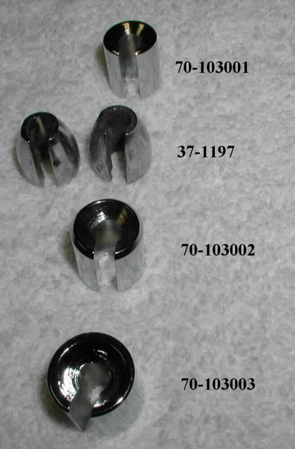

- 70-103001 -- Spoke Wheel Weight, 14.25grms/.5oz -- $2.57.
- 37-1197 -- Wheel Weight, Light, 16 grms/.56 oz -- $1.45.
- 70-103002 -- Spoke Wheel Weight, 21.26grms/.75oz -- $3.88.
- 70-103003 -- Spoke Wheel Weight, 28.35grms/1oz --
$2.57.
We have a kit that contains an assortment of wheel weights suitable for one wheel (part # 14-100201, $11.92) This kit has more weights than one wheel will ever need, but since you do not know what weights will be used in balancing a wheel, balance the wheel and send us back the unused weights for a full refund of the weights returned.
| Ref No. | Part No. | Description | Qty. Inc. |
| 1 | 70-103001 | Spoke Wheel Weight, 14.25grms/.5oz | |
| 2 | 37-1197 | Wheel Weight, Light, 16 grms/.56 oz | |
| 3 | 70-103002 | Spoke Wheel Weight, 21.26grms/.75oz | |
| 5 | 70-103003 | Spoke Wheel Weight, 28.35grms/1oz |
See our technical article on Fastening Spoke Weights, for information on how to use the weights.
This page was written and designed by F. H. Eaton & Associates. If you have any questions or comments, please contact us at info@fheaton.com